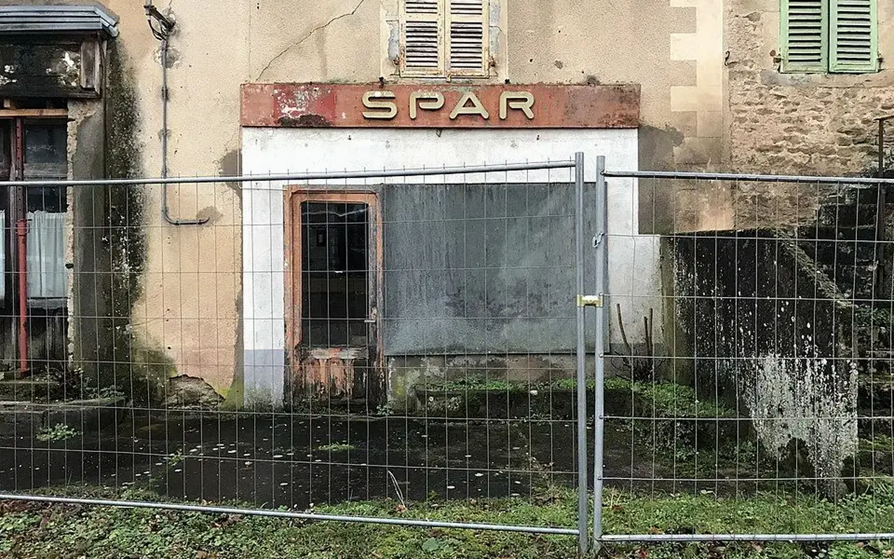
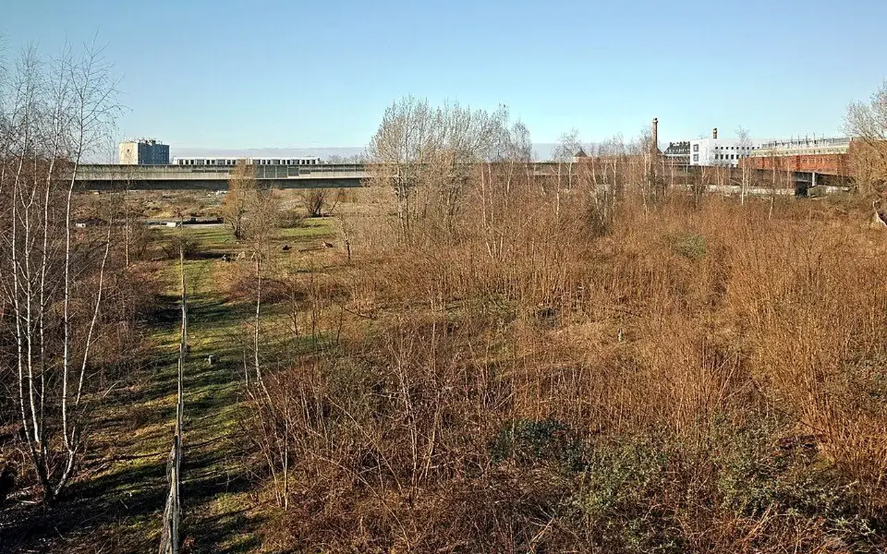
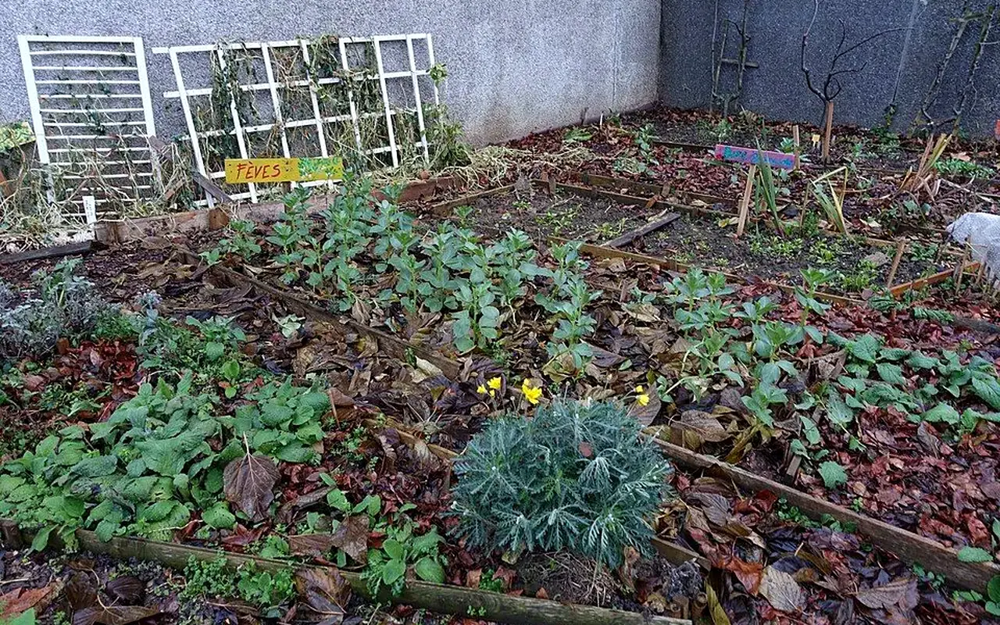
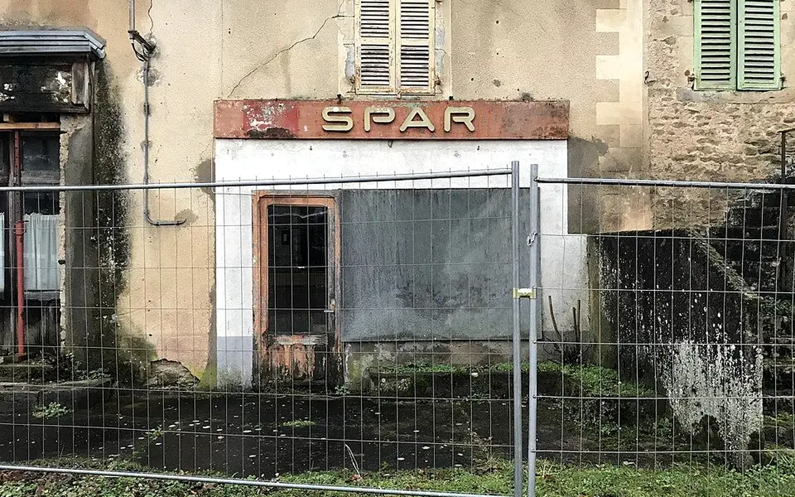

Dossier public
Solidarité & Insertion
Favoriser l'emploi, l'engagement citoyen, la découverte des métiers et l'inclusion sociale.

Cette action relie l'utilité territoriale à l'engagement humain : apprendre, participer, transmettre, se former et contribuer à des projets concrets.
Donnée non publiée sans action validée.
Suivi structuré par la méthode TVF.
Documentation à établir avec les référents.
Publication conditionnée à une source documentée et à une validation humaine.



Participer à cette action
Transformer les lieux vacants en supports d’engagement, de formation et d’emploi
Les projets de revitalisation ne concernent pas seulement les bâtiments. Ils peuvent créer des parcours : repérage, médiation, inventaire de matériaux, chantiers participatifs, entretien d’espaces, accueil du public, logistique, communication locale et formation aux métiers de la rénovation ou du réemploi.
L’enjeu social est fort dans un contexte où l’INSEE observe en 2023 une hausse du taux de pauvreté à 15,4 % en France métropolitaine, soit 9,8 millions de personnes vivant sous le seuil de pauvreté mon’taire. Les difficultés de logement, de mobilité et d’emploi se renforcent mutuellement, surtout dans les territoires où les services sont éloign’s.
Un logement mal situé, une absence de permis, des difficultés de santé, un manque de réseau professionnel ou un territoire sans offre de formation peuvent éloigner durablement de l’emploi. Les chantiers utiles au territoire peuvent recréer un cadre concret d’apprentissage et de confiance.
TVF peut proposer des missions graduées : observation, inventaire, ateliers de réemploi, chantiers encadrés, médiation avec les habitants et orientation vers les structures compétentes. L’association doit travailler avec les acteurs sociaux existants, sans se substituer à eux.
Exemple fictif à visée pédagogiqueUne équipe bénévole pourrait accompagner un atelier d’inventaire de matériaux avec des jeunes en découverte des métiers du bâtiment. Exemple fictif, uniquement pédagogique.
TVF peut-elle employer directement des personnes en insertion ?
Ce serait une étape planifiée à encadrer juridiquement. La première phase consiste à créer des missions, des partenariats et une méthode.
Pourquoi lier insertion et réemploi ?
Parce que l’inventaire, la préparation, la logistique et les ateliers peuvent devenir des supports d’apprentissage concrets.
Comment éviter les chantiers non sécuris’s ?
Chaque chantier doit être encadré, assuré, dimensionné et confié à des professionnels lorsque les tâches l’exigent.
Solidarité et insertion : relier les projets aux compétences
La réhabilitation d'un lieu peut devenir un support d'apprentissage, de bénévolat et de retour vers l'emploi. Cela demande un cadre sérieux : encadrement, sécurité, assurances, partenaires compétents et objectifs réalistes.
Causes à analyser
Un parcours solidaire doit partir des compétences, de la sécurité, de l'encadrement, des besoins du chantier et des acteurs sociaux mobilisables.
Solution TVF
TVF relie engagement citoyen et action utile : missions adaptées, ateliers pratiques, chantiers encadrés, orientation et suivi des participants.
Cas type : chantier participatif encadré
Un chantier léger peut accueillir des habitants et bénévoles si les gestes sont adaptés, les risques maîtrisés et la coordination confiée à des personnes qualifiées.
Exemple fictif à visée pédagogique, non présenté comme une réalisation TVF.
Statut de publication : une mission participative n'est ouverte qu'après cadrage des risques, des assurances, des encadrants et des tâches confiées.
Devenir bénévoleLecture opérationnelle
Comprendre rapidement Solidarité & Insertion
| Question | Réponse TVF | Preuve ou livrable attendu |
|---|---|---|
| Quel besoin traite la page ? | Qualifier une situation territoriale avant de proposer une action. | Fiche de lecture, diagnostic ou formulaire adapté. |
| Quels acteurs sont concernés ? | Collectivités, propriétaires, entreprises, associations, financeurs ou citoyens selon le sujet. | Interlocuteur identifié, rôle clarifié, accord de publication si nécessaire. |
| Comment passer à l'action ? | Documenter le besoin, choisir le parcours, rassembler les pièces et cadrer les responsabilités. | Fiche projet, convention, budget, calendrier et indicateurs. |
Insertion et engagement
Du constat à l'action : Solidarité & Insertion
Cette page précise comment l'action locale peut creer des parcours utiles, encadrés et accessibles.
Problème
Les projets de revitalisation ont besoin de bras, de competences, de mediation et de cadres sécurisés.
Donnée utile
Repere national : l'INSEE documente les situations de pauvrete, d'emploi et de fragilite sociale par territoire.
Solution TVF
TVF prépare des missions adaptees : reperage, ateliers, tri, documentation, benevolat et chantiers encadrés.
Méthode
Les travaux techniques restent confies à des professionnels ou à des equipes habilitees ; le benevolat est encadre.
Acteurs
Associations, missions locales, structures d'insertion, organismes de formation, collectivités et entreprises.
Impact visé
Relier engagement citoyen, competences locales et utilite concrete pour les habitants.
FAQ
Questions fréquentes sur cette action
Solidarité & Insertion explique comment encadrer l'engagement citoyen, les chantiers solidaires et les parcours d'insertion.
Un chantier participatif est-il ouvert à tous ?
Pour Solidarité & Insertion, les missions doivent être adaptées aux compétences, encadrées et sécurisées ; les gestes techniques restent confiés à des professionnels qualifiés.
Comment l'insertion est-elle envisagée ?
Dans Solidarité & Insertion, l'insertion passe par des parcours progressifs : découverte des métiers, ateliers pratiques, logistique, médiation, animation locale et orientation.
Que peut apporter un bénévole ?
Sur Solidarité & Insertion, un bénévole peut aider au repérage, à la documentation, à l'animation, à la logistique ou à la mobilisation locale.
Passer à l’action
Choisir le parcours adapté à votre rôle
Chaque demande doit être orientée vers un cadre clair : besoin territorial, propriétaire, ressource, financement, bénévolat ou coopération institutionnelle.